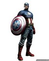
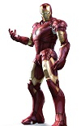
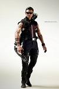
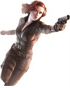
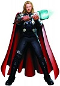
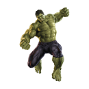

代号:美国队长
出生日期：1918年7月4日
主要能力：远超常人的各项体能、强大的盾牌
英雄简介：他被视为是美国精神的象征，接受美国政府的实验改造后变成了“超级士兵”，这使其力量、速度、耐力等各项体能都远超出于常人，被赋予了由世界上最坚硬的金属之一：吸音钢制成的盾牌，被神盾局发现并解冻后才加入了复仇者联盟.
代号:钢铁侠
出生日期：1965年04月04日
主要能力：钢铁战甲、制造各种高科技装备
英雄简介：斯塔克工业董事长，因于一场阴谋绑架中，胸部遭弹片穿入，为了挽救自己的生命，造出了防止弹片侵入心脏的反应炉，从而逃过一劫，后又利用方舟反应炉作为能量来源，制造了一套高科技装甲，并利用其杀出重围后逃脱，从此化身“钢铁侠”守卫世界。
代号:鹰眼
出生日期：1971年1月7日
主要能力：箭无虚发、各种功能的高科技箭头，经过改造后远超常人的视觉
英雄简介：是个在马戏团长大的孤儿，师从剑客和捷射，天赋异常，少年时便获得“鹰眼“和“世界最佳狙击手”的称号，在某次演出时看到钢铁侠救人后，决心用自己的能力成为超级英雄，加入复仇者联盟，成为其中重要的一份子。
代号:黑寡妇
出生日期：1928年
主要能力：世界超一流的格斗和抗击打能力
英雄简介：自幼被前苏联特工人员训练成特工，身体经前苏联政府基因改造后大大延缓了其衰老速度，并增强其免疫系统以及抗击打能力，自身已经犹如致命的毒蜘蛛“黑寡妇”，后背叛前苏联特工组织“红房”，加入复仇者联盟。
代号:雷神
出生日期：不详
主要能力：远超人类的力量、耐力和反应，远超人类的各项感官、飞行，全身刀枪不入、锤子可操纵雷电
英雄简介：雷神托尔的原形为北欧神话中的托尔，是众神之父奥丁的长子。他常成为好友钢铁侠的对比，特显了科学与神话的差别。他的著名武器为姆乔尔尼尔（Mjolnir）就是“雷神之锤”的意思。
代号:绿巨人
出生日期：1967年11月22日
主要能力：无敌的力量和耐力、飞一样跳跃力，刀枪不入的身体、极强的自愈能力
英雄简介:是一位天才核子物理学博士，在一次意外中为了保护同事而被自己制造出的伽玛炸弹（Gamma Bomb）放射线大量辐射，身体产生异变，后每当他情绪激动心跳加速的时候就会变成名为浩克的绿色怪物。